Akash's Travel Blog
Welcome to Akash Tripathi's Travel Blog! Embark on a journey through the rich culture, history, and vibrant traditions of Uttar Pradesh with me, Akash Tripathi. As a passionate traveler and storyteller, I aim to bring the essence of iconic cities like Lucknow, Kanpur, Prayagraj, and Varanasi to life. Discover the regal Nawabi charm of Lucknow, where Mughal architecture and delectable cuisine weave a tale of elegance. Dive into the industrial and cultural vibrancy of Kanpur, where history meets modernity. Experience the spiritual awakening at Prayagraj, the sacred confluence of the Ganges, Yamuna, and Saraswati rivers. Finally, immerse yourself in the timeless traditions of Varanasi, the world's oldest living city, where rituals and spirituality leave a lasting impression. Through this blog, I share personal insights, hidden gems, and unforgettable experiences to inspire your wanderlust. Whether you're a history enthusiast, a foodie, or a seeker of spiritual solace, there's something here for everyone. Join me as we explore the heart and soul of Uttar Pradesh, one adventure at a time!
Exploring the Timeless Charm of Lucknow
Summary: Lucknow, the "City of Nawabs," is a captivating blend of history, culture, and culinary delights. Renowned for its regal charm, the city boasts iconic landmarks such as the majestic Bara Imambara and the intricately designed Rumi Darwaza, which showcase its rich architectural heritage. The bustling lanes of Hazratganj offer a vibrant shopping experience, while serene gardens and historic temples add to the city's allure. Lucknow is also a paradise for food enthusiasts, offering world-famous delicacies like Tunday Kebabs and Lucknawi biryani, reflecting its royal culinary traditions. Whether you're exploring its historic streets, savoring its royal flavors, or experiencing its warm hospitality, Lucknow promises an unforgettable journey steeped in elegance and tradition.
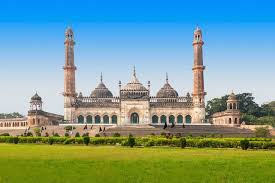 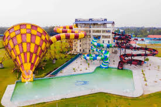 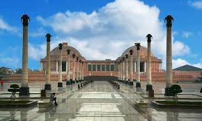Lucknow, the City of Nawabs, is a vibrant blend of history, culture, and culinary delights. From the majestic Bara Imambara and the intricately designed Rumi Darwaza to the bustling lanes of Hazratganj, Lucknow is a treasure trove of architectural wonders and rich heritage. The city is also a paradise for food lovers, offering iconic dishes like Tunday Kebabs and Lucknawi biryani. Whether you're strolling through its historic streets or indulging in its royal flavors, Lucknow promises an unforgettable experience steeped in elegance and tradition.
Discovering the charm of Kanpur
Summary:Kanpur, a vibrant city in Uttar Pradesh, is a perfect blend of history, culture, and modernity. Known for its rich industrial heritage and the Ganges river flowing through it, Kanpur offers travelers a mix of spiritual, historical, and leisure experiences.
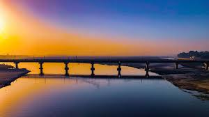 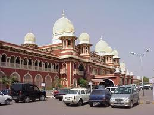 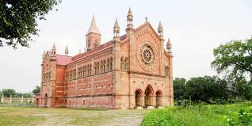Kanpur, nestled on the banks of the Ganges, is a city that beautifully combines history, culture, and urban charm. In this travel vlog, we explore the city's iconic landmarks, hidden gems, and vibrant local life.A serene visit to J.K. Temple, showcasing its stunning architecture and peaceful ambiance. A wildlife adventure at Allen Forest Zoo, a lush green escape perfect for families. Thrilling rides and water fun at Blue World Theme Park, a must-visit for adventure lovers. A walk through Kanpur's history at the Kanpur Memorial Church, a relic of the British era. Exploring bustling local markets and indulging in mouthwatering street food like thaggu ke laddu and badnaam kulfi. Experience Kanpur Like a Local: From the vibrant bazaars to the tranquil ghats of the Ganges, the vlog captures the essence of Kanpur, making it a perfect blend of tradition and modernity. Whether you're a history buff, a foodie, or an adventure seeker, this vlog promises a memorable journey through Kanpur's heart and soul.
Mahakumbh and hidden gems of Prayagraj
Summary: Prayagraj, formerly known as Allahabad, is a city steeped in spirituality, history, and cultural richness. Nestled at the confluence of the holy rivers Ganga, Yamuna, and the mythical Saraswati, it is a revered pilgrimage destination in India.
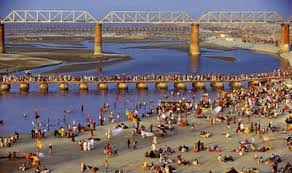 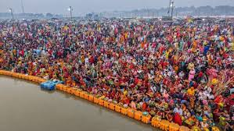 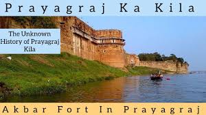Prayagraj is famous for its vibrant festivals, including the grand Kumbh Mela, and its delectable local cuisine, such as kachoris and jalebis. The city is also a hub of academic excellence, being home to Allahabad University. Best Time to Visit: October to March offers pleasant weather for exploring this spiritual and historical city. Prayagraj is a harmonious blend of divinity, heritage, and modernity, making it a must-visit destination for every traveler.
Spiritual exploration in Varanasi
Summary: Varanasi, one of the oldest living cities in the world, is a spiritual and cultural hub located on the banks of the holy Ganges River. Known for its deep-rooted history, ancient temples, and vibrant rituals, Varanasi offers a unique blend of spirituality and tradition.
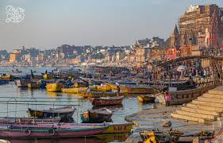 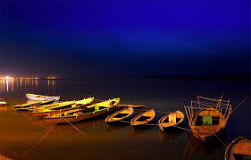
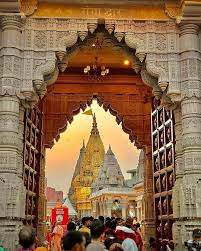
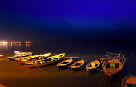
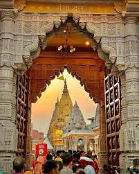
Varanasi is famous for its silk weaving industry, especially Banarasi sarees, and its rich music and arts scene. Visitors can also enjoy local delicacies like "kachaudi," "jalebi," and "lassi." Best Time to Visit: The best time to visit Varanasi is from October to March, when the weather is cooler and more pleasant for exploring the city. Varanasi is not just a destination; it is a journey into the heart of Indian spirituality, culture, and history, offering a transformative experience for every traveler.
About Me
Hi, I'm Akash, a passionate travel blogger with a deep love for exploring the rich culture, history, and vibrant traditions of Uttar Pradesh. As a traveler, I find myself captivated by the blend of spirituality, heritage, and modernity that this region offers. In my blog, I take you on a journey through four iconic cities: Lucknow, Kanpur, Prayagraj, and Varanasi. From the regal Nawabi charm of Lucknow with its Mughal architecture and delectable cuisine, to the bustling industrial vibes of Kanpur, where history meets modernity, each city has its own unique story. In Prayagraj, the confluence of the Ganges, Yamuna, and Saraswati rivers offers a spiritual awakening, while Varanasi, the world's oldest living city, invites you to witness rituals and traditions that have stood the test of time. Join me as I explore the hidden gems, share local insights, and guide you through the soul-stirring experiences that these cities have to offer. Whether you're a history buff, a foodie, or a spiritual seeker, my travel tales will inspire you to discover the magic of Uttar Pradesh.
Contact me-
I'd love to hear from you! Feel free to connect with me through the following channels:
- Email: tripathig0542@gmail
- GitHub: github.com/Akash-Tri
- LinkedIn: linkedin.com/in/akash-tripathi